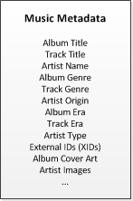

All Gracenote customers can access core metadata from Gracenote for the products they license. Optionally, customers can retrieve additional metadata, known as enriched metadata, by purchasing additional metadata entitlements.
The following diagram shows the core and enriched metadata available for Music.
